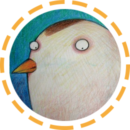
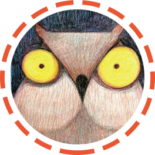
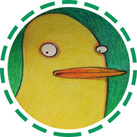

师资力量
咚咚老师
毕业于华中科技大学数字媒体艺术设计专业，长期从事艺术创作，经验丰富，是课程研发团队的主要老师。 她研发该学科组的教材，提倡老师要善于针对低幼学生的心理、生理特点，引导学生在“玩”中学习，尊 重并鼓励学生发现自我、表达自我，在教学中真正做到儿童心理和艺术创作的有机结合。

NANA老师
NANA老师具有多年艺术教学经验，对于美学规律与创意技巧有着深入的研究，现担任早到到艺术教育研究 院动漫组导师。季老师致力于指导与培训老师们因材施教，通过创意动漫教学的方式发掘每个孩子的闪光点， 让孩子们不断获得自主思考与创意联想的能力。

丁丁老师
丁丁老师多年从事时装设计三要素研究：色彩、材料、造型之间的艺术表达关系。她现担任早到到艺术教育研 究院时装组导师，一直潜心研究如何将复杂的时装设计教授给学生。她致力于指导老师以时装设计为媒介，将 创意多元的思维传授给学生，从而学生的审美、格调、品味以及动手能力。

丫丫老师
丫丫老师担任早到到艺术教育研究院早稻组的导师，多年从事该学科组的教学研发工作，专注于研究艺术教 学中新材料和新手法的应用。她指导老师结合早稻组学生的生理及心理发展规律，让学生最大程度去尝试和 体验艺术，激发他们的创意潜能并让天性与特长获得充分表现。